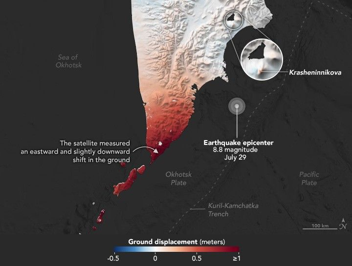

Mapping Kamchatka Earthquake Displacement
Earth’s surface may seem stable and unchanging, but it is anything but static. The tectonic plates that make up the planet’s rigid outer layer are like puzzle pieces that squeeze and grind against each other—often slowly but sometimes in violent, shuddering jolts that we know as earthquakes.
After an earthquake, seismometers are among the first tools scientists look to for information. Global networks of these ground-based sensors measure vibrations in the Earth’s crust and upper mantle and are used to identify the location of the epicenter and the intensity of the shaking. However, seismic networks have limits. In some cases, they cannot measure the extent of a rupture with great accuracy, especially in areas where local seismic networks are sparse.
A newer remote sensing technique called interferometric synthetic aperture radar (InSAR) helps fill in these gaps. In August 2025, for instance, the technique measured ground displacement, along with signs of impending volcanic activity, after a major earthquake rattled the Kamchatka Peninsula in eastern Russia.
InSAR provides measurements of displacement—the shifting of the ground away from or toward the satellite—across hundreds of square kilometers. First developed in the 1980s, the method enables scientists to map earthquake ruptures with a precision impossible from seismic networks alone by comparing two or more SAR images taken before and after a quake.
The map above shows the amount of ground displacement caused by a powerful earthquake that struck offshore of the peninsula on July 29, 2025. Red areas were pushed primarily eastward by the magnitude 8.8 event, one of the strongest recorded by modern seismic instruments. Dashed lines highlight key faults and plate boundaries in the region. Small white patches in the southern part of the peninsula are areas where the displacement could not be measured.
An illustration of NASA-ISRO's NISAR satellite orbiting Earth, showing its large radar antenna extended above the spacecraft and solar panels deployed as it collects data.
Based on data from previous earthquakes, scientists knew the location and basic geometry of the large fault, a “megathrust,” to the east of the peninsula, where the denser Pacific Plate is sliding underneath the Okhotsk Plate starting at the Kuril–Kamchatka trench. But InSAR mapping helped researchers pinpoint which parts of the fault moved during the earthquake and how much, explained Eric Fielding, a geophysicist at NASA’s Jet Propulsion Laboratory (JPL).
“Notice how little displacement there was near the epicenter and how the largest displacements were to the southwest more than 200 kilometers away, near the southern tip of the Kamchatka Peninsula,” he said. The technique measured an eastward motion of the southernmost part of the peninsula of more than 1 meter (3 feet), as well as a slight downward motion in the land surface.
This type of information has practical and, in some cases, life-saving uses. In conjunction with seismic and global navigation satellite data, U.S. Geological Survey scientists use InSAR data in models that define exactly where and by how much a fault slips, information that is used in tsunami forecasting models. Displacement mapping can also be useful in the immediate aftermath of an earthquake by quickly identifying the most affected areas and making it easier for emergency response officials to decide how to deploy limited resources. In this case, damage to infrastructure on the peninsula was minimal despite the intensity of the earthquake because the epicenter was offshore, the largest fault slip was near the southern tip, and the peninsula was sparsely populated.
The power of InSAR is that it augments other observations to provide a more detailed understanding of a fault rupture, noted Andrea Donnellan, head of Purdue University’s Department of Earth, Atmospheric, and Planetary Sciences. “This can be used to study how the fault slips after the earthquake, both quietly and via aftershocks.” Such insights inform future earthquake hazard assessments and improve understanding of how faults behave globally.
The map at the top of the page is based on data from the Advanced Rapid Imaging and Analysis (ARIA) team at JPL, which develops state-of-the-art deformation measurements, change detection methods, and physical models for use in hazard science and response. The team used SAR data from the PALSAR-2 sensor on the Japan Aerospace Exploration Agency’s ALOS-2 for InSAR analysis to measure how much the ground moved in relation to the satellite.
The technique detects both horizontal and vertical movement, though in this case most of the displacement was horizontal. The ALOS-2 data were acquired on August 2, 2025, four days after the earthquake. For comparison, the researchers used a baseline radar image captured by the sensor on September 13, 2023.
A false-color satellite image of Krasheninnikova volcano features an infrared signature (red) indicating a lava flow on its eastern flank. Green vegetation surrounds the volcano. Scattered clouds are visible on the left side of the image.
On August 2, ALOS-2 also observed a notable amount of displacement at Krasheninnikova, a long-dormant volcano on the peninsula that erupted five days after the earthquake. The satellite measured surface displacement (red in the inset on the map above) on the flank of the volcano, indicating that there was likely a dike of magma approaching the surface, according to Fielding. “If volcanologists had seen these data soon after they were acquired, they might have recognized that an eruption was imminent.”
The OLI (Operational Land Imager) on Landsat 8 captured an image of a lava flow on the volcano’s eastern flank on August 25, 2025. The false-color image depicts observations of shortwave infrared, near infrared, and visible light (bands 7-5-4). Bright red indicates the infrared signature of the lava.
Judith Hubbard, a structural geologist, agreed that InSAR is valuable for volcanologists. “InSAR is one of the main tools that scientists have to understand volcanic activity. Together with other types of data, like gas emissions and seismological signals, it can be used to determine a volcano’s threat level.”
ARIA scientists have used radar data from ALOS-2 and other satellites for several years, but the NISAR (NASA-ISRO Synthetic Aperture Radar) satellite, launched in July 2025, is expected to open up a new, more comprehensive source of InSAR data for displacement mapping after earthquakes. “With NISAR, we will get better quality and more frequent displacement maps from earthquakes, volcanoes, landslides, and other processes that cause displacement of Earth’s surface,” said Fielding.
For earthquakes in heavily forested areas such as the Pacific Northwest or Indonesia, NISAR’s frequent coverage and L-band radar wavelength will provide displacement maps that were not previously available from other satellites at all. When released, NISAR data products are expected to be available within one to two days after observation, and even faster during the response to a disaster. An illustration of NISAR in orbit around Earth is above.